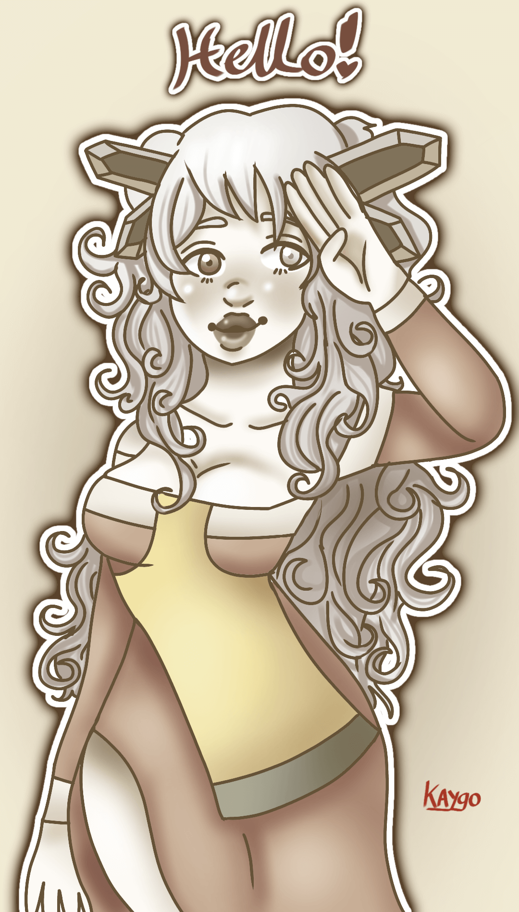
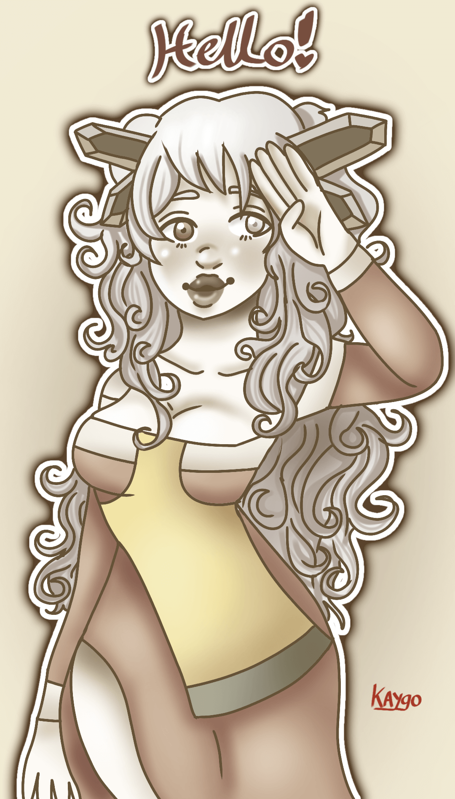

This page has three subpages; one showcasing my work done in the “Visual Creativity” module, one showcasing my work done in the “Design Process and Practice” module, and one displaying some of my digital and traditional drawings outside of college time.
In the "Visual Creativity" module, we had to fill in an A3 sketchbook exploring the given theme "Mechanic Organic". We had to go out and collect a variety of primary research (whichw ere images relating to the theme) and explore visual elemts and styles while developing our own theme within the general "Mechanic Organic" theme. I chose to go with the theme "Decay and Replication" to show that while organic things die, mechanical thungs contiue to develop and take over.
In the "Design Process and Practice" module, we had to conduct a variety of primary research to collect data to make an informative poster for first year students.
This area is my strong suit, so I hope you enjoy looking through my work!
Interested in the works shown below? Click on them to read more about them and see more!
 
